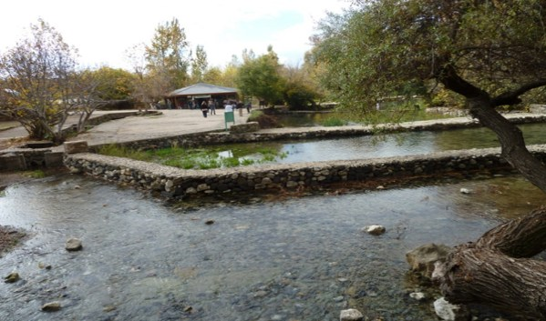
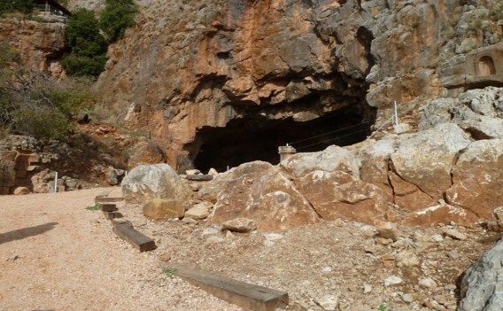
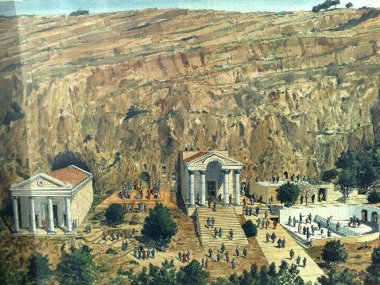
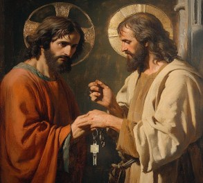
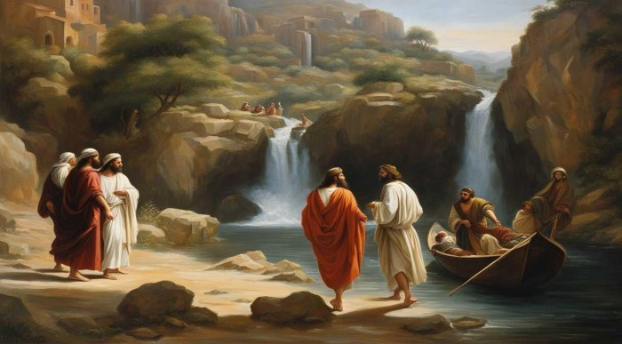
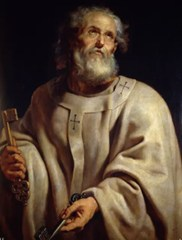

—砕かれながら形作られるペトロ—
ペトロは、多くの弟子たちが去っていく姿を見ながら、人は「奇跡」には集まっても、「命の言葉」には耐えられないのだという現実を知ったのかもしれない。それから、イエスは、ファリサイ派の人々と律法学者たちの問答において、彼らの間違いを鋭く指摘された。そしてカナン人の女の娘と、耳が聞こえず、口のきけない人を癒し、四千人の給食の奇跡を行い、ベッサイダの目の見えない人を癒された(マルコ7章1~8章26節)。
ペトロは、人々が「この方のなさったことはすべて、すばらしい。」(同、7章37節)と驚嘆の声をあげているのを側で聞きながら、イエスがメシアであることをますます確信したのでる。それから、一行はフィリポ・カイサリア地方出かけられた。
イエスと弟子たちは、ガリラヤ湖の北にある町ベツサイダを離れ、さらに北へ向かってフィリポ・カイサリアに至った。道中、イエスは弟子たちに重要な問いを投げかける。
「人々は、わたしのことを何者だと言っているか」。聖書がこの場面で具体的な地名を記しているのは、その問いが発せられた「場所」そのものが、出来事の理解に深く関わっているからである。
フィリポ・カイサリア地方は、ガリラヤ湖から北へ約 60キロ、ヘルモン山南麓の標高 300メートルほどの地域に位置している。イエスが訪れた土地の中でも最北にあたると考えられている。この地にはヨルダン川の源泉があり、湧き出る泉の洞窟にはギリシア神話の神パンを祀る聖所があった。パンは音楽や舞踊を愛し、上半身が人間、下半身が羊という姿で描かれる自然神である。この神にちなみ、周辺の町は「パニアス」と呼ばれている。
紀元前20年、ローマ皇帝アウグストゥスからこの地を与えられたヘロデ大王は、皇帝への忠誠を示すため、パンの聖所の近くに皇帝像を祀る大理石の神殿を建て、皇帝崇拝を人々面に求めた。後にその息子フィリポが町を整備し、皇帝カイサルの名を冠して「カイサリア」と改称する。すでに地中海沿岸に同名の町があったため、自らの名を加えて「フィリポ・カイサリア」と呼ばれるようになった。
このように、イエスが弟子たちに問いを発した場所は、自然崇拝と皇帝崇拝が混在する、宗教と政治が複雑に絡み合う土地であった。豊かな実りをもたらすと信じられた神々が祀られ、同時にローマ皇帝を神として崇めることが求められる――そのような場所で、イエスは「人々は、人の子を何者だと言っているか」と問いかけられたのである。
政治学者・南原繁は「ある時代や国民がどの神を神とし、何を神性とみなすかは、その文化と運命を決定する」と述べている。イエスと弟子たちのやり取りは、まさにその言葉を思い起こさせるものであり、現代を生きる私たちにも深く響く問いとなっている。
実際、この直後のマタイ福音書16章21節では、イエスが初めてご自身の受難と死を弟子たちに明かす場面が続く。その重大な局面に向けて、イエスは弟子たちに「他者の声に耳を傾ける」姿勢を促しているように見える。どれほど立派な考えであっても、他者の声を無視すれば独善に陥り、自己満足にすぎなくなってしまうからである。
聖書は「聞くのに早く、話すのに遅くあれ」(ヤコブの手紙1章19節)と教える。イエスはまず弟子たちに、周囲の人々が何を語っているのかを聞き取るよう促された。弟子たちはその問いに対し、自分たちが知る限りの人々の声を答え始める。



弟子たちはイエスの問いに答えた。
「『洗礼者ヨハネだ』と言う人もいれば、『エリヤだ』と言う人もいます。ほかにも、『エレミヤだ』とか、『預言者の一人だ』と言う人たちがいます。」と。
彼らは、人々がイエスについて語っていたさまざまな噂を挙げていく。最初に名前が出る「洗礼者ヨハネ」は、ヨルダン川でイエスに洗礼を授けた預言者である。荒れ野で禁欲的な生活を送り、人々に迫り来る神の裁きを告げ、「悔い改めにふさわしい実を結べ」と呼びかけた。最後は領主ヘロデ・アンティパスの宴会の場で殺された。権力に屈しないヨハネの高潔な生き方に心を動かされた人々は多く、イエスをそのヨハネの生まれ変わりだと考える者もいたのである。
また、イエスを旧約の預言者エリヤだと見る人々もいた。エリヤは、終末に救い主が来る前触れとして再び現れると信じられていた人物である。ローマ帝国の支配や宗教指導者の圧政に苦しんでいた人々は、神が不正を正してくださる日を切実に待ち望んでいた。
さらに、イエスを預言者エレミヤの再来と考える者もいた。紀元前6世紀、迫害と苦難の中で神の救いの約束を語り続けた「涙の預言者」エレミヤ。その姿をイエスに重ねた人々も少なくはなかった。
一方で、イエスを過去の預言者の再来と見るのではなく、まったく新しい預言者、神の言葉を新たに取り次ぐ者だと受け止める人々もいた。イエスの語る言葉や行いには、それまでのどの預言者とも異なる力と慰めがあったからである。いずれにしても、弟子たちが耳にしていたイエスへの評判は概して好意的で、弟子たちはそれを誇らしく感じたことでしょう。
イエスは彼らの答えを聞いた後、さらに問いかける。「それでは、あなたがたはわたしを何者だと言うのか」(15節)と。
イエスは弟子たちに、他人の意見ではなく、自分自身の言葉で答えるよう促されます。人の意見を繰り返すだけでは責任を負わずに済んでしまいます。私たちも「みんながそう言っているから」と逃げてしまうことがありますが、時に「私はこう思う」と言わなければならない場面があります。周囲に同調するのではなく、自分は何を信じるのかを明らかにする必要があるのです。
「それでは、あなたがたは」と問われたとき、弟子たちは一瞬ためらったかもしれません。他人のことは語れても、自分の信仰を言葉にするのは容易ではない。答えることには責任が伴い、勇気が求められる。しかし、そこにこそ人の真実が現れる。しばし沈黙があったのではないでしょうか。その沈黙を破り、弟子たちを代表してシモン・ペトロが答える。
「あなたはメシア、生ける神の子です。」
「メシア」とは救い主を意味する。ペトロは、イエスこそ神の救いをもたらす方であり、生きて働かれる神の御子であると告白したのである。
この告白がなされたのは、前記したフィリポ・カイサリアという地であった。自然崇拝が盛んで、多くの神々が祀られ、さらに皇帝崇拝が強制される地域のただ中で、ペトロはこの信仰を言い表したのである。彼自身がその重さをどれほど自覚していたかは分からない。しかし、私たちを救うのは豊かな自然でも、ギリシア神話の神々でもない、ましてや人間にすぎない皇帝でもない。今ここで共に歩んでくださるイエスこそ、生ける神の子メシアである――その確信がペトロの内から湧き上がり、彼を突き動かしたのでしょう。
イエスはその告白の背後にあるものを見抜かれ、こう言われる。
「シモン・バルヨナ、あなたは幸いだ。あなたにこのことを現したのは、人間ではなく、わたしの天の父なのだ。」 (17節)
「バルヨナ」とは「ヨナの子」という意味で、アラム語で「息子」を表す言葉である。イエスはシモンの本来の名を呼び、彼の告白は人間の理解によるものではなく、天の父なる神が働きかけて与えられたものだと告げる。だからこそ「あなたは幸いだ」と言われたのである。
プロテスタントの伝統では、この言葉はペトロ個人というより、彼の信仰告白に重点があると理解されてきた。彼はイエスに呼び集められた弟子たち全体を代表して告白したからである。ペトロの言葉には、そこにいた弟子たち皆の思いが込められていたと思われる。「あなたはメシア、生ける神の子です」という告白は、弟子たち全員の信仰を象徴するものだったからである。
イエスは続く 18節で、「わたしも言っておく。あなたはペトロ。わたしはこの岩の上にわたしの教会を建てる」と宣言された。この言葉は、シモン・ペトロ個人だけに特別な地位を与えるために語られたものではないでしょう。ローマ・カトリック教会は、この言葉を根拠にペトロを教会の基礎とし、初代教皇の位置づけを与えている。しかし、教会の基礎はペトロという一人の人間ではなく、彼が語った信仰告白そのものにある。そして、その告白を彼に言わせた「生ける神」の働きこそが、最も重要なのである。
神は、弱く、愚かで、罪深く、失敗を重ねる人間をなお顧みてくださる。そこにこそ幸いがある。生ける神の子キリストが、誤りやつまずきの多い私たちを見捨てずに用い、「わたしはこの岩の上にわたしの教会を建てる」と語ってくださった。しかも、「陰府の力もこれに対抗できない」と言われるほどの大いなる力を、私たちに近く、確かに、密接に与えてくださっているのである。地上でつなぐことは天上でもつながれ、地上で解くことは天上でも解かれる」と語られるほどの権威を、信じる者に委ねてくださっている。ここに私たちの幸いがある。イエスを「生ける神の子」と信じる者に与えられる幸いである。
私たちがどれほど過ちや失敗に満ちていても、この約束は取り消されません。生ける神の宣言であり、御子キリストの約束だからである。
生ける神の子キリストは、人の痛みや悲しみを深くご存じである。何の良いものも出ないと蔑まれたガリラヤで、大工として汗を流し、家族を養われた方である。故郷では父の名ではなく「マリアの息子」と呼ばれて軽んじられ、日々の糧を求めて祈られた。病の苦しみも、罵られる屈辱も、恥も知っておられる。そして最後には罪人として扱われ、十字架で殺された。このイエスこそ、生ける神の子キリストです。
私たちはこのお方を畏れ敬う。そして、このお方が「あなたは幸いだ。あなたにこのことを現したのは、人間ではなく、わたしの天の父なのだ」と語ってくださることを喜ぶ。
「わたしはこの岩の上に」、すなわちあなたの信仰の上に「わたしの教会を建てる。陰府の力もこれに対抗できない」と言われるほどの大きな力を与えてくださっていることに感謝する。
この恵みを受けた者として、私たちは「どの神を神とし、何を神性とみなすのか」という問いを心に留め、証ししながら、この時代を生きる者として日々祈りつつ歩んでいきます。
イエスはさらにこう言われる。
しかしこの時のペトロは、まだ「苦しむメシア」を理解してはいなかった。彼の信仰告白は真実であったが、その真実がどのような道を通るのかを、彼はまだ知らなかったのである。


イエスが「この岩の上にわたしの教会を建てる」と語られた言葉については、キリスト教の歴史の中で大きな解釈の違いが生まれてきた。ここで、カトリック教会とプロテスタント教会の理解を簡潔に整理しておきたいと思う。
カトリック教会は、この「岩」をペトロ本人と理解する。イエスがペトロを教会の基礎として立てられたと解釈し、そこからペトロを初代とする教皇制度が形づくられた。現在のローマ教皇ロバート・フランシス・プレヴォストは267代目の教皇である。カトリック教会において教皇は、イエスから「天の国の鍵」を託された者として、特別な権威を持つ存在とされている。
一方、宗教改革者マルティン・ルターをはじめとするプロテスタントの伝統では、「この岩」とはペトロの語った信仰告白――「あなたはメシア、生ける神の子です」――を指すと理解する。教会の基礎は特定の人物ではなく、「イエスこそキリストである」という信仰そのものにあるという立場である。
プロテスタント教会はルターの解釈を受け継ぎ、人間に権威を置くのではなく、イエスを「生ける神の子」と信じる告白こそが教会の土台であると考えている。預言者の再来ではなく、神の御子として来られたイエスを信じること――それが教会の拠りどころであり、すべての信仰の中心なのである。
ある聖書註解書は次のように説明している。
「ペトロ自身が天国に入る権利を持つだけでなく、『鍵』によって象徴される一般的な権威を与えられ、福音を宣べ伝えることによって信じる者には天の御国を開き、不信仰者には閉ざされる手段となることを意味する」。
このように、ペトロと使徒たちはイエスから驚くべき権威を託されたのである。
